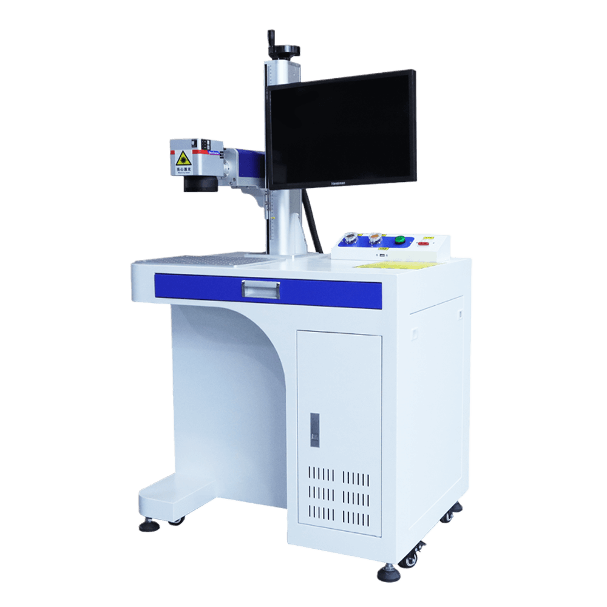

SKU: SAL-M-28
Laser Marking Machine
| Sub-Category | Spices Processing |
| Material | Aluminum Body |
| Brand | KMG |
| Model | LM-20W |
Laser Marking Machine uses high-precision laser technology to create permanent markings on different surfaces. It is commonly used for printing serial numbers, barcodes, logos, and batch details with clarity and durability. Process is clean and efficient as it does not require ink or any consumable materials. High-speed operation makes it suitable for continuous production environments. It supports multiple materials including metal, plastic, and glass with consistent marking quality.
Rate this product:
Click a star to submit your review